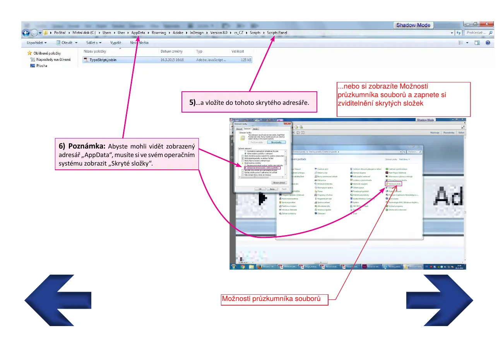
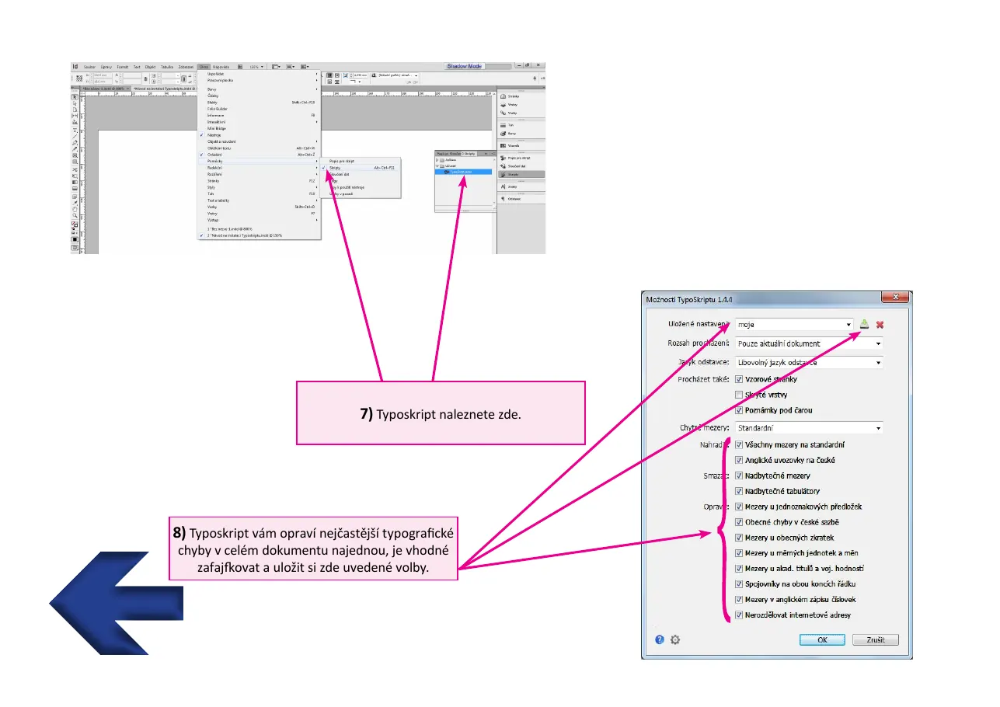
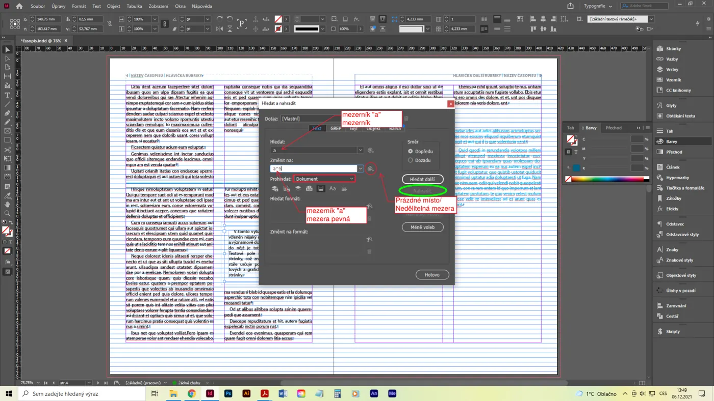
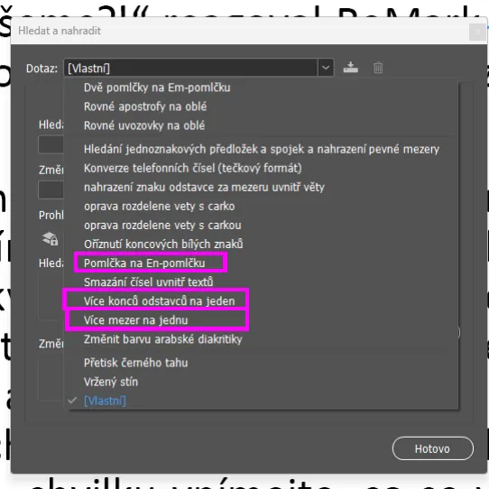
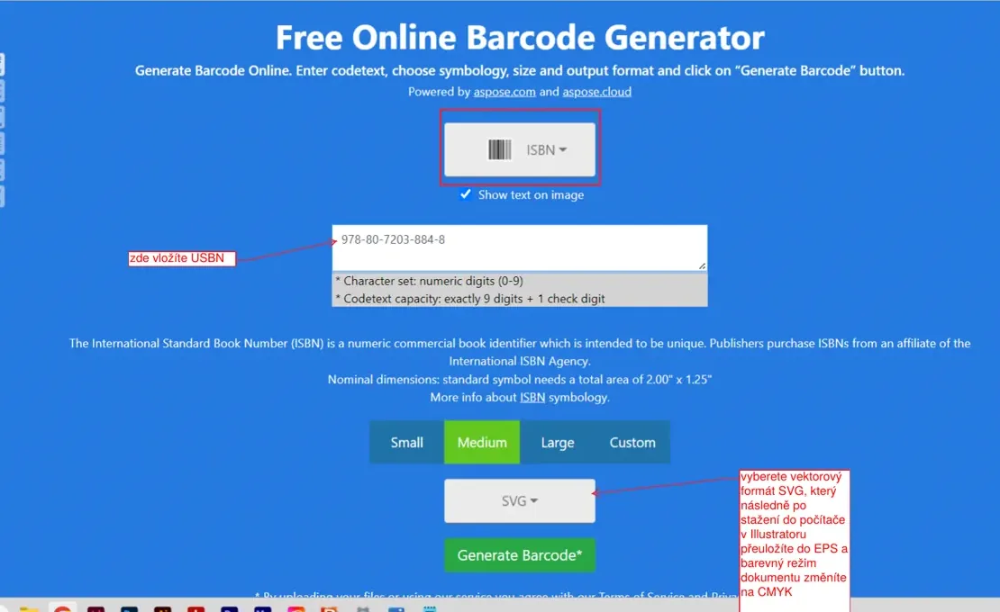

Zdroje· skripty, normy, literatura
Zdroje a skripty
Všechno, co potřebuješ nainstalovat nebo mít po ruce. Soubory jsou na školním OneDrive ve složce Výukové soubory 4.G; sem dávám jen odkazy a návod, kam co patří.
Skripty a vyhledávací dotazy
Tři pomocníci, které u maturity smíš použít, pokud je máš nainstalované – ale musíš vědět, co dělají, a umět to vysvětlit.
TypoSkript
Skript pro panel . Opraví v celém dokumentu najednou nejčastější typografické chyby: pevné mezery za jednopísmennými předložkami a spojkami, české uvozovky „“, pomlčky, trojtečku, násobné mezery, mezery před interpunkcí.
- Stáhni aktuální verzi z typoskript.cz (nebo z OneDrive) a rozbal.
- Stiskni Win+R a napiš
%appdata%\Adobe\InDesign(skryté složky musí být zobrazené). - Soubor skriptu vlož do
Version 21.0\cs_CZ\Scripts\Scripts Panel. - V InDesignu otevři panel Skripty, dvojklikem skript spusť, zaškrtni volby a ulož si je.
Vyhledávací dotaz GREP – odentrované řádky
Dotaz pro Ctrl+F, který najde konce odstavců uprostřed vět (malé písmeno za koncem odstavce). Vlož ho do AppData\Roaming\Adobe\InDesign\Version 21.0\cs_CZ\Find-Change Queries\GREP. Stáhnout z OneDrive.
Ruční varianta: v GREP hledej (\l)\r(\l) a nahraď $1 $2 – malé písmeno, konec odstavce, malé písmeno → mezera.
Skript – aktualizace lokálních změn do stylů
Když v textu ručně přepíšeš parametr stylu (u názvu stylu se objeví „+“), skript lokální změny přenese zpět do odstavcového stylu. Stáhnout z OneDrive. Ručně: pravým tlačítkem na styl › Předefinovat styl.




Čárové kódy
Na zadní obálku knihy patří ISBN, na periodikum ISSN. Vždy vektorově, v CMYK (100 % K).
- Otevři online generátor čárových kódů, zvol typ EAN-13 / ISBN a vlož číslo.
- Stáhni jako SVG (vektor).
- V Illustratoru otevři, barevný režim dokumentu přepni na CMYK, zkontroluj, že je kód 100 % černá, a ulož jako EPS (nebo rovnou vlož SVG do InDesignu).
- Umísti na zadní obálku. Oficiální velikost EAN-13 je 37,3 × 25,9 mm; povolené zmenšení na 80 % a zvětšení až na 200 %. Kolem kódu nech klidovou zónu, nikdy ho nedeformuj.
ISSN pro cvičení: 1214-4029 (funkční výchozí kód). Vlastní ISBN se přiděluje přes Národní agenturu ISBN (Národní knihovna ČR); vydání knihy s ISBN má zákonné povinnosti – povinné výtisky do 30 dnů (lekce 14).

Typografický manuál a ČSN 01 6910
Dva dokumenty, které jsou ve 4. ročníku stěžejním studijním podkladem. Oba jsou ve sdílené složce.
Typografický manuál (Vladimír Beran a kol.)
Kapitoly Písmo (znaky, písmová osnova, kresba znaku, měření písma, typ, rodina, klasifikace), Sazba (mezislovní mezera, vyplňování řádků, proklad, odstavec, zarovnaný a nezarovnaný text, dělení slov, znaménka, čísla a zkratky, hladká a smíšená sazba, korekturní znaménka), Návrh (typografické pravítko, rukopis, počítání znaků, sazební obrazec, formáty papíru) a Dodatky (výroba písma, papír, tiskové techniky, dokončovací výroba). K otázkám 06, 14, 15.
ČSN 01 6910 – Úprava dokumentů zpracovaných textovými procesory
Česká státní norma pro úpravu písemností: mezery, interpunkce, pomlčky a spojovníky, čísla, data, jednotky, zkratky, adresy, členění textu. Komise se u otázky 04 ptá, jak musí být odstavcové styly nastavené, aby vyhovovaly „typografickým a gramatickým pravidlům a ČSN“.
Grafický design (Zdeno Kolesár) a Logotvorba
Teorie grafického designu, vizuální komunikace, značka. K otázkám 07, 09, 08.
Vlastnosti dobrého loga (Jan Tippman, UGD)
Definice logo / logotyp / piktogram / grafická značka, členění dle vizuálního motivu a doby užívání, identifikační, sémantická, estetická a technologická kritéria – přesně v rozsahu otázek 07 a 09. unie-grafickeho-designu.cz
Online nástroje a hry
Volně dostupné zdroje, které se hodí k procvičování.
Doporučená literatura pro Grafiku a Grafickou tvorbu
Většinu najdeš ve školní nebo krajské knihovně.
Typografie a design
- Vladimír Beran a kol.: Typografický manuál
- Zdeno Kolesár: Grafický design
- David Dabner a kol.: Škola grafického designu
- Matthew Healey: Design loga
Kresba a anatomie
- Andrew Loomis: Učebnice kresby
- Martin Ševčík: Portrét a hlava
- Vicenç Ballestar: Kresba
- Steve Huston: Kresba postavy
- Jan Štípek: Základy nauky o stavbách (lidské proporce)
Dějiny umění a architektury
- Bohumír Mráz: Dějiny výtvarné kultury 1–4
- Carol Davidson Cragoe: Abeceda architektury
- Larry Gonick: Komiksová historie světa 1–5
Zdroje obrazových ukázek
Obrázky výtvarných děl v lekcích 17–20 pocházejí z Wikimedia Commons – volná díla (public domain) a díla pod otevřenými licencemi CC BY / CC BY-SA, u kterých je uveden autor fotografie a licence přímo v popisku. Stejná sada je použitá na webu Časová osa dějin umění, kde je i úplný seznam zdrojů. Screenshoty z programů Adobe jsou vlastní výukové materiály školy; ilustrace a schémata na tomto webu jsou kreslené v SVG přímo pro něj.
Seznam použitých obrazových ukázek (lekce 17–20) s autorem a licencí
| Dílo | Soubor na Commons | Autor | Licence |
|---|---|---|---|
| Abú Simbel | Wikimedia Commons (viz seznam na webu dějin umění) | ||
| Agamemnonova maska | MaskeAgamemnon.JPG | DieBuche | CC BY-SA 3.0 |
| Aj Wej-wej: Slunečnicová semínka | Wikimedia Commons (viz seznam na webu dějin umění) | ||
| Alhambra – Lví dvůr | Patio de los Leones.jpg | Jim Gordon | CC BY 2.0 |
| Altamira (Španělsko) | Wikimedia Commons (viz seznam na webu dějin umění) | ||
| Angkor Vat | Angkor Wat.jpg | Bjørn Christian Tørrissen | CC BY-SA 4.0 |
| Apadana v Persepoli | Persépolis, Irán, 2016-09-24, DD 53.jpg | Diego Delso | CC BY-SA 4.0 |
| Arcimboldo: Rudolf II. jako Vertumnus | Wikimedia Commons (viz seznam na webu dějin umění) | ||
| Athénská Akropole | Wikimedia Commons (viz seznam na webu dějin umění) | ||
| Banksy: Dívka s balónkem | Wikimedia Commons (viz seznam na webu dějin umění) | ||
| Basquiat: Bez názvu (lebka) | Wikimedia Commons (viz seznam na webu dějin umění) | ||
| Bazilika sv. Petra | Wikimedia Commons (viz seznam na webu dějin umění) | ||
| Bazilika sv. Prokopa v Třebíči | Třebíč, bazilika sv. Prokopa.jpg | Stanislav Dusík | CC BY-SA 4.0 |
| Beeple: Everydays – The First 5000 Days | Wikimedia Commons (viz seznam na webu dějin umění) | ||
| Beninský bronzový reliéf | At the British Museum 2024 019.jpg | Photograph by Mike Peel (www.mikepeel.net). | CC BY-SA 4.0 |
| Bernini: Extáze sv. Terezie | Wikimedia Commons (viz seznam na webu dějin umění) | ||
| Beuys: Jak vysvětlit obrazy mrtvému zajíci | Wikimedia Commons (viz seznam na webu dějin umění) | ||
| Boccioni: Jedinečné formy kontinuity v prostoru | 'Unique Forms of Continuity in Space', 1913 bronze by Umberto Boccioni.jpg | Wmpearl | Public domain |
| Book of Kells (Irsko) | Wikimedia Commons (viz seznam na webu dějin umění) | ||
| Borobudur | Borobudur-Nothwest-view.jpg | Gunawan Kartapranata | CC BY-SA 3.0 |
| Bosch: Zahrada pozemských rozkoší | Wikimedia Commons (viz seznam na webu dějin umění) | ||
| Botticelli: Zrození Venuše | Wikimedia Commons (viz seznam na webu dějin umění) | ||
| Braun: Kuks – Ctnosti a Neřesti | Braunovy sochy Ctností a Neřestí na Kuksu (12).jpg | Dezidor | CC BY 3.0 |
| Bruegel: Selská svatba | Wikimedia Commons (viz seznam na webu dějin umění) | ||
| Busta Nefertiti | Wikimedia Commons (viz seznam na webu dějin umění) | ||
| C. D. Friedrich: Poutník nad mořem mlhy | Wikimedia Commons (viz seznam na webu dějin umění) | ||
| Caravaggio: Povolání sv. Matouše | Wikimedia Commons (viz seznam na webu dějin umění) | ||
| Cattelan: Comedian | Wikimedia Commons (viz seznam na webu dějin umění) | ||
| Chagall: Já a vesnice | Marc Chagall, I and the Village (50394064557).jpg | Marc Chagall | Public domain |
| Chammurapiho stéla | Code-de-Hammurabi-1.jpg | Rama | CC BY-SA 3.0 fr |
| Christo: Zabalený Reichstag | Verhüllter Reichstag, Berlin 1995.jpg | Nik Konietzny | CC BY-SA 4.0 |
| Courbet: Kameníci | Wikimedia Commons (viz seznam na webu dějin umění) | ||
| Cézanne: Hora Sainte-Victoire | Paul Cézanne - Mont Sainte-Victoire - Google Art Project.jpg | Paul Cézanne | Public domain |
| Dalí: Persistence paměti | Wikimedia Commons (viz seznam na webu dějin umění) | ||
| David: Přísaha Horatiů | Jacques-Louis David - Oath of the Horatii - Google Art Project.jpg | Anne-Louis Girodet / After Jacques-Louis David | Public domain |
| Delacroix: Svoboda vede lid na barikády | Wikimedia Commons (viz seznam na webu dějin umění) | ||
| Disk z Nebry (Německo) | Nebra Scheibe.jpg | Dbachmann | CC BY-SA 3.0 |
| Divadlo v Epidauru | Wikimedia Commons (viz seznam na webu dějin umění) | ||
| Dobrý pastýř (Ravenna) | Wikimedia Commons (viz seznam na webu dějin umění) | ||
| Duchamp: Fontána | Duchamp Fountaine.jpg | Marcel Duchamp | Public domain |
| Dürer: Autoportrét (1500) | Wikimedia Commons (viz seznam na webu dějin umění) | ||
| Dürer: Zajíc | Wikimedia Commons (viz seznam na webu dějin umění) | ||
| Džoserova pyramida v Sakkáře | Wikimedia Commons (viz seznam na webu dějin umění) | ||
| El Castillo (Chichén Itzá) | Chichen Itza 3.jpg | Daniel Schwen | CC BY-SA 4.0 |
| Eliasson: The Weather Project | Wikimedia Commons (viz seznam na webu dějin umění) | ||
| Emil Filla: Zátiší (1914) | Wikimedia Commons (viz seznam na webu dějin umění) | ||
| Erechtheion – síň karyatid | Wikimedia Commons (viz seznam na webu dějin umění) | ||
| Fan Kchuan: Cestovatelé mezi horami a potoky | Fan Kuan - Travelers Among Mountains and Streams - Google Art Project.jpg | Fan Kuan | Public domain |
| Fragonard: Houpačka | Fragonard, The Swing.jpg | Jean-Honoré Fragonard | Public domain |
| Gaudí: Sagrada Família | Wikimedia Commons (viz seznam na webu dějin umění) | ||
| Gehry a Milunić: Tančící dům | Dancing House, Prague.jpg | Wisneyykarin | CC BY-SA 4.0 |
| Giotto: Setkání Jáchyma a Anny | Wikimedia Commons (viz seznam na webu dějin umění) | ||
| Gočár: dům U Černé Matky Boží | Wikimedia Commons (viz seznam na webu dějin umění) | ||
| Gočár: Grand hotel Pardubice | Wikimedia Commons (viz seznam na webu dějin umění) | ||
| Gočár: lázeňský dům v Bohdanči | Josef Gočár pavillion Lázně Bohdaneč.JPG | cs:User:Zp (autor:Zp) | CC BY-SA 3.0 |
| Göbekli Tepe (Turecko) | Wikimedia Commons (viz seznam na webu dějin umění) | ||
| Hagia Sofia (Konstantinopol) | Wikimedia Commons (viz seznam na webu dějin umění) | ||
| Hagia Sofia – interiér | Wikimedia Commons (viz seznam na webu dějin umění) | ||
| Hilma af Klint: Labuť č. 17 | Wikimedia Commons (viz seznam na webu dějin umění) | ||
| Hlava Kelta z Mšeckých Žehrovic | Stone sculpture of celtic hero.jpg | CeStu | CC BY 3.0 |
| Hlava krále z Ife | British Museum Room 25 Head of a king Ife 17022019 5147.jpg | Vassil | CC0 |
| Hlavní loď gotické katedrály | Wikimedia Commons (viz seznam na webu dějin umění) | ||
| Hokusai: Velká vlna u Kanagawy | Wikimedia Commons (viz seznam na webu dějin umění) | ||
| Hrobka Leopardů (Tarquinia) | Tarquinia Tomb of the Leopards.jpg | AlMare | Public domain |
| Hypostylový sál v Karnaku | Wikimedia Commons (viz seznam na webu dějin umění) | ||
| Ištařina brána (Babylon) | Wikimedia Commons (viz seznam na webu dějin umění) | ||
| Jan van Eyck: Manželé Arnolfiniovi | Wikimedia Commons (viz seznam na webu dějin umění) | ||
| Jeskyně Chauvet (Francie) | Wikimedia Commons (viz seznam na webu dějin umění) | ||
| Jeskyně Leang Tedongnge (Sulawesi) | Leang Tedongnge cave mouth credit AA Oktaviana.jpg | Oktaviana | CC BY-SA 4.0 |
| Josef Mánes: kalendárium orloje | Wikimedia Commons (viz seznam na webu dějin umění) | ||
| Julius Mařák: Šumavský prales | Wikimedia Commons (viz seznam na webu dějin umění) | ||
| Kapitol (Washington) | Wikimedia Commons (viz seznam na webu dějin umění) | ||
| Kaple sv. Kříže na Karlštejně | Wikimedia Commons (viz seznam na webu dějin umění) | ||
| Katedrála v Chartres | Wikimedia Commons (viz seznam na webu dějin umění) | ||
| Keltský bronzový šperk (Cerhýnky) | Wikimedia Commons (viz seznam na webu dějin umění) | ||
| Kirchner: Ulice, Berlín | Kirchner 1913 Street, Berlin.jpg | Ernst Ludwig Kirchner | Public domain |
| Klimt: Polibek | The Kiss - Gustav Klimt - Google Cultural Institute.jpg | Gustav Klimt | Public domain |
| Kolibřík z Nazca | Líneas de Nazca, Nazca, Perú, 2015-07-29, DD 52.JPG | Diego Delso | CC BY-SA 4.0 |
| Koloseum | Wikimedia Commons (viz seznam na webu dějin umění) | ||
| Kovanda: Kontakt | Wikimedia Commons (viz seznam na webu dějin umění) | ||
| Kristus Pantokrator | Wikimedia Commons (viz seznam na webu dějin umění) | ||
| Krumlovská madona | Wikimedia Commons (viz seznam na webu dějin umění) | ||
| Kubišta: Sv. Šebestián | Wikimedia Commons (viz seznam na webu dějin umění) | ||
| Kultovní nádobka z Kolínska | Wikimedia Commons (viz seznam na webu dějin umění) | ||
| Kupka: Amorfa – Dvoubarevná fuga | Wikimedia Commons (viz seznam na webu dějin umění) | ||
| Kusama: Infinity Mirror Room | Wikimedia Commons (viz seznam na webu dějin umění) | ||
| Lascaux (Francie) | Wikimedia Commons (viz seznam na webu dějin umění) | ||
| Leonardo: Mona Lisa | Wikimedia Commons (viz seznam na webu dějin umění) | ||
| Leonardo: Poslední večeře | Wikimedia Commons (viz seznam na webu dějin umění) | ||
| Leonardo: Vitruviánský muž | Wikimedia Commons (viz seznam na webu dějin umění) | ||
| Letohrádek královny Anny (Belveder) | Wikimedia Commons (viz seznam na webu dějin umění) | ||
| Lichtenstein: Whaam! | Wikimedia Commons (viz seznam na webu dějin umění) | ||
| Lovci z Valltorty (Španělsko) | Wikimedia Commons (viz seznam na webu dějin umění) | ||
| Lví brána v Mykénách | Wikimedia Commons (viz seznam na webu dějin umění) | ||
| Machu Picchu | Machu Picchu, Peru.jpg | Pedro Szekely at https://www.flickr.com/photos/pedrosz/ | CC BY-SA 2.0 |
| Magritte: Syn člověka | Wikimedia Commons (viz seznam na webu dějin umění) | ||
| Malevič: Černý čtverec | Kazimir Malevich, 1915, Black Suprematic Square, oil on linen canvas, 79.5 x 79.5 cm, Tretyakov Gallery, Moscow.jpg | Kazimir Malevich | Public domain |
| Manet: Bar ve Folies-Bergère | Wikimedia Commons (viz seznam na webu dějin umění) | ||
| Matisse: Tanec | Matissedance.jpg | Henri Matisse | Public domain |
| Medek: obraz z období informelu | Wikimedia Commons (viz seznam na webu dějin umění) | ||
| Mešita v Córdobě | Mosque Cordoba.jpg | Timor Espallargas | CC BY-SA 2.5 |
| Michelangelo: Poslední soud | Wikimedia Commons (viz seznam na webu dějin umění) | ||
| Michelangelo: Stvoření Adama | Wikimedia Commons (viz seznam na webu dějin umění) | ||
| Milánský dóm | Wikimedia Commons (viz seznam na webu dějin umění) | ||
| Mistr Theodorik: sv. Marek | Wikimedia Commons (viz seznam na webu dějin umění) | ||
| Mistr Vyšebrodského oltáře | Wikimedia Commons (viz seznam na webu dějin umění) | ||
| Moai na Rapa Nui | Moai Rano raraku.jpg | Aurbina | Public domain |
| Monet: Imprese, východ slunce | Monet - Impression, Sunrise.jpg | Claude Monet | Public domain |
| Moravská malovaná keramika | Wikimedia Commons (viz seznam na webu dějin umění) | ||
| Mucha: plakát Gismonda | Wikimedia Commons (viz seznam na webu dějin umění) | ||
| Munch: Výkřik | Wikimedia Commons (viz seznam na webu dějin umění) | ||
| Newgrange (Irsko) | Wikimedia Commons (viz seznam na webu dějin umění) | ||
| Notre-Dame v Paříži | Wikimedia Commons (viz seznam na webu dějin umění) | ||
| Národní divadlo v Praze | Wikimedia Commons (viz seznam na webu dějin umění) | ||
| Obecní dům v Praze | Wikimedia Commons (viz seznam na webu dějin umění) | ||
| Olmécká kolosální hlava | Olmec Head No. 1.jpg | Mesoamerican | CC BY-SA 4.0 |
| Otisky rukou | Wikimedia Commons (viz seznam na webu dějin umění) | ||
| Ozdoba doby železné | Wikimedia Commons (viz seznam na webu dějin umění) | ||
| Palladio: Villa Rotonda | Wikimedia Commons (viz seznam na webu dějin umění) | ||
| Palácová kaple v Cáchách | Aachener Dom Oktogon.jpg | Lokilech | CC BY-SA 3.0 |
| Pantheon (Paříž) | Wikimedia Commons (viz seznam na webu dějin umění) | ||
| Pantheon (Řím) | Wikimedia Commons (viz seznam na webu dějin umění) | ||
| Pardubická radnice | Pardubice - Pernštýnské náměstí - View NNE on Radnice - City Hall.jpg | Txllxt TxllxT | CC BY-SA 4.0 |
| Parthenón (Athény) | Wikimedia Commons (viz seznam na webu dějin umění) | ||
| Pergamský oltář | Wikimedia Commons (viz seznam na webu dějin umění) | ||
| Petr Parléř: busta Karla IV. | Wikimedia Commons (viz seznam na webu dějin umění) | ||
| Picasso: Tři hudebníci | Wikimedia Commons (viz seznam na webu dějin umění) | ||
| Plán kláštera ze St. Gallen | Wikimedia Commons (viz seznam na webu dějin umění) | ||
| Pollock: Katedrála | Wikimedia Commons (viz seznam na webu dějin umění) | ||
| Pont du Gard (Francie) | Wikimedia Commons (viz seznam na webu dějin umění) | ||
| Pyramidy v Gíze | Wikimedia Commons (viz seznam na webu dějin umění) | ||
| Raffael: Athénská škola | Wikimedia Commons (viz seznam na webu dějin umění) | ||
| Rembrandt: Noční hlídka | The Night Watch - HD.jpg | Rembrandt | Public domain |
| Rentgenový styl (Ubirr, Kakadu) | Ubirr rock art.jpg | Nigel Malone | CC BY-SA 1.0 |
| Rjóandži – zenová zahrada | Kyoto-Ryoan-Ji MG 4512.jpg | Cquest | CC BY-SA 2.5 |
| Rothko: Oranžová, červená, žlutá | Wikimedia Commons (viz seznam na webu dějin umění) | ||
| Rotunda sv. Kateřiny ve Znojmě | Znojmo Rotunda 20190217.jpg | Uoaei1 | CC BY-SA 4.0 |
| Rousseau: Sen | Wikimedia Commons (viz seznam na webu dějin umění) | ||
| Sainte-Chapelle (Paříž) | Wikimedia Commons (viz seznam na webu dějin umění) | ||
| San Marco (Benátky) | Wikimedia Commons (viz seznam na webu dějin umění) | ||
| San Vitale (Ravenna) | Wikimedia Commons (viz seznam na webu dějin umění) | ||
| Sant'Apollinare Nuovo (Ravenna) | Wikimedia Commons (viz seznam na webu dějin umění) | ||
| Santa Costanza (Řím) | Wikimedia Commons (viz seznam na webu dějin umění) | ||
| Sarkofág manželů (Cerveteri) | Sarcofago degli sposi.jpg | Lupachiotto64 | CC BY-SA 4.0 |
| Serranía de la Lindosa (Kolumbie) | Wikimedia Commons (viz seznam na webu dějin umění) | ||
| Skok přes býka (Knóssos) | Knossos bull.jpg | unknown ancient artist | Public domain |
| Sluneční vůz z Trundholmu (Dánsko) | Wikimedia Commons (viz seznam na webu dějin umění) | ||
| Smithson: Spirálové molo | Spiral-jetty-from-rozel-point.png | Sculpture: Robert Smithson 1938-1973Image:Soren.harward at en.wikipedia | Public domain |
| Stonehenge (Anglie) | Wikimedia Commons (viz seznam na webu dějin umění) | ||
| Sv. Mikuláš na Malé Straně (interiér) | Praha St. Nicholas Church Organ 01.jpg | Uoaei1 | CC BY-SA 4.0 |
| Sýkora: Linie | Wikimedia Commons (viz seznam na webu dějin umění) | ||
| Tatlin: Věž III. internacionály | Wikimedia Commons (viz seznam na webu dějin umění) | ||
| Terakotová armáda (Si-an) | Terracotta Army - Pit 1, Xi'an, China (14148051282).jpg | Joe Hart from Southampton, United Kingdom | CC BY 2.0 |
| Tetrarchové (Benátky) | Wikimedia Commons (viz seznam na webu dějin umění) | ||
| Tizian: Nanebevzetí Panny Marie | Wikimedia Commons (viz seznam na webu dějin umění) | ||
| Toyen: Spící | Wikimedia Commons (viz seznam na webu dějin umění) | ||
| Turner: Déšť, pára a rychlost | Rain Steam and Speed the Great Western Railway.jpg | J. M. W. Turner | Public domain |
| Tutanchamonova maska | Wikimedia Commons (viz seznam na webu dějin umění) | ||
| Tympanon v Autunu (Gislebertus) | Autun St Lazare Tympanon.jpg | — | CC BY-SA 3.0 |
| Tádž Mahal (Ágra) | Taj Mahal, Agra, India edit3.jpg | Taj_Mahal,_Agra,_India_edit2.jpg: Yann; edited by King of Hearts derivative work: Jbarta (talk) | CC BY-SA 3.0 |
| Van Gogh: Hvězdná noc | Van Gogh - Starry Night - Google Art Project.jpg | Vincent van Gogh | Public domain |
| Vasarely: Vega | Wikimedia Commons (viz seznam na webu dějin umění) | ||
| Velkomoravský gombík | Wikimedia Commons (viz seznam na webu dějin umění) | ||
| Vermeer: Dívka s perlou | Girl with a Pearl Earring.jpg | Johannes Vermeer | Public domain |
| Vila Tugendhat (Brno) | Wikimedia Commons (viz seznam na webu dějin umění) | ||
| Vladimirská Bohorodička | Wikimedia Commons (viz seznam na webu dějin umění) | ||
| Věstonická venuše | Wikimedia Commons (viz seznam na webu dějin umění) | ||
| Warhol: Campbellovy polévky | Wikimedia Commons (viz seznam na webu dějin umění) | ||
| Warhol: Západ slunce | Wikimedia Commons (viz seznam na webu dějin umění) | ||
| Willendorfská venuše | Wikimedia Commons (viz seznam na webu dějin umění) | ||
| Zikkurat v Uru (Irák) | Wikimedia Commons (viz seznam na webu dějin umění) | ||
| Zámek Nové Hrady | Nové Hrady zámek.jpg | Miloš Miličevič Česko | CC BY-SA 4.0 |
| Çatalhöyük (Turecko) | Wikimedia Commons (viz seznam na webu dějin umění) | ||
| Ötzi – rekonstrukce | Wikimedia Commons (viz seznam na webu dějin umění) | ||
| Řecké sloupové řády | Wikimedia Commons (viz seznam na webu dějin umění) | ||
| Šiva Natarádža | Shiva Nataraja Musée Guimet 25971.jpg | Unknown authorUnknown author | Public domain |
| Šíření člověka z Afriky | Wikimedia Commons (viz seznam na webu dějin umění) | ||
| Žákovský malířský experiment: baroko | Wikimedia Commons (viz seznam na webu dějin umění) | ||
| Žákovský malířský experiment: impresionismus | Wikimedia Commons (viz seznam na webu dějin umění) | ||
| Žákovský malířský experiment: rokoko | Wikimedia Commons (viz seznam na webu dějin umění) |
Při vlastní práci (periodikum, kniha, obaly) platí totéž: používej vlastní fotografie, nebo zdroje s licencí, která tisk dovoluje, a zdroj uveď v tiráži. Vyhledávání na Wikimedia Commons: filtr Licence, u každého souboru záložka s podmínkami užití.